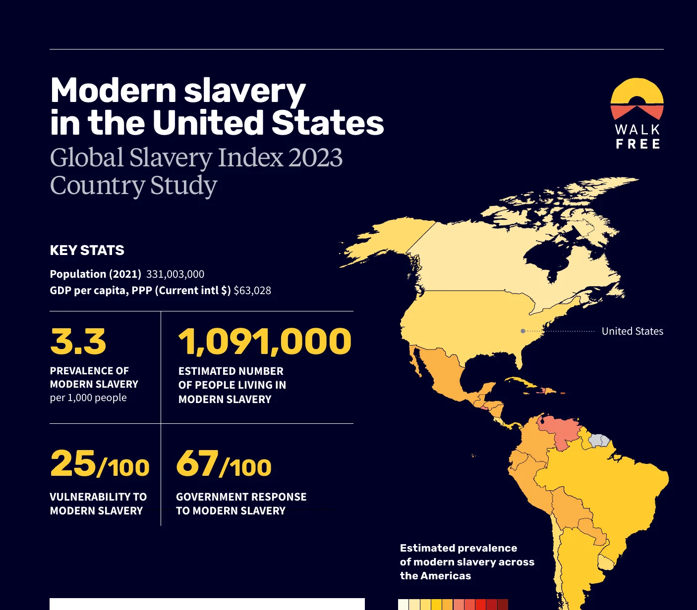

Q1. Scale and definitions: why estimates differ by 1,000x

Modern slavery in the United States: Global Slavery Index 2023 country study (key stats: 1,091,000; 3.3 per 1,000). Walk Free, Global Slavery Index 2023 | Date: 2023. Modeled estimate of people in modern slavery in the U.S. on any given day (1,091,000), vulnerability and government-response scores. Extrapolated from GEMS surveys in other countries via vulnerability model; no U.S. survey behind it. Contested (see Q6) Source: https://cdn.walkfree.org/content/uploads/2023/11/14130741/gsi-country-study-usa.pdf
Global trend of detection rates, base year 2019 (detected victims +25% in 2022). UNODC Global Report on Trafficking in Persons 2024, Fig. 1 | Date: Dec 2024. Change in victims detected per 100,000 population vs 2019, based on 125 countries. Detected = identified by national authorities. Rises can mean more trafficking OR more detection Source: https://www.unodc.org/documents/data-and-analysis/glotip/2024/GLOTIP2024_BOOK.pdf
Global trend on detection rates of trafficking victims by form of exploitation, 2003-2022. UNODC GLOTIP 2024, Fig. 6 | Date: Dec 2024. Detected victims per 100,000: total, sexual exploitation, forced labour, other. Detected victims; forced labour rose 47% vs 2019 per UNODC Source: https://www.unodc.org/documents/data-and-analysis/glotip/2024/GLOTIP2024_BOOK.pdf